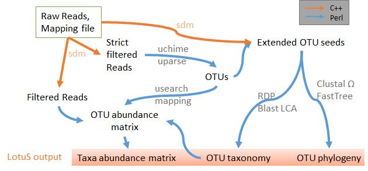

How your gut bacteria could help detect pancreatic cancer early
Falk Hildebrand and Daisuke Suzuki explain why stool-based microbial signals may help researchers develop earlier, non-invasive approaches to pancreatic-cancer detection.
Research
We study how microbes are distributed, how they evolve and how their communities respond to one another, their hosts and the wider environment. Our work combines genome-resolved metagenomics, numerical ecology and openly shared methods.
Our approach
Microbiomes contain a vast number of organisms, genes and interactions. Rather than treating that complexity as noise, we build ways to resolve it—connecting reads to genomes, genomes to strains, and strains to the ecological processes that shape them.
We work across human, soil and environmental microbiomes, with a particular interest in how microbial variation can inform health, disease and a more precise understanding of ecosystem function.

Microbial diversity
Much of microbial diversity is still invisible to standard reference collections. We use metagenome-assembled genomes and high-resolution strain analysis to find organisms in human and environmental samples, then place their genes and functions in biological context.
This work helps move microbiome research from broad taxonomic labels towards the organisms and variants most relevant to a person, population or ecosystem.
Microbial evolution
Populations of microbes are not fixed entities. They gain and lose genes, diversify within hosts and spread among people, places and habitats. We investigate how those processes affect persistence, transmission and adaptation.
By combining comparative genomics, population genetics and phylogenetic approaches, we ask what a microbial species means in practice—and when strain-level variation changes the conclusions we can draw about disease or ecology.
Microbial communities
Communities are more than a list of species. Their structure reflects shared niches, environmental pressures, host biology and interactions between organisms. We use numerical ecology, clustering and machine learning to identify recurring patterns in the gut, soil and water.
Those patterns can make large datasets more interpretable: for example, by describing community-level signatures linked with diet, inflammation or broader environmental change.
Research & news
A selective reading list of lab-authored explainers, institutional stories and independent coverage. It is a starting point for the wider context around the research—not a live news feed.
Written by the group
Public-facing explainers and practical guidance by Falk Hildebrand and colleagues, including pieces originally published in The Conversation.
Falk Hildebrand and Daisuke Suzuki explain why stool-based microbial signals may help researchers develop earlier, non-invasive approaches to pancreatic-cancer detection.
Falk Hildebrand, Katarzyna Sidorczuk and Wing Koon outline why inflammatory bowel disease remains difficult to treat and how microbiome research could inform future therapies.
Falk Hildebrand, Mark Pallen and Aimee Parker set out why extraordinary claims need rigorous contamination controls and independent validation.
Falk Hildebrand and Chris Quince discuss what microbiome science could contribute to future health research and innovation.
Falk explains how metagenomics helps make invisible microbial communities measurable, from the gut to environmental ecosystems.
Practical, openly available guidance for designing, analysing and communicating robust microbiome research, including contributions from Falk and lab colleagues.
Commentary & response
Companion articles, comments and external discussion that help place lab publications in a wider scientific conversation.
Christian Diener and Sean M. Gibbons discuss the enterosignatures study and its approach to describing gut-microbiome variability through recurrent bacterial guilds.
A feature with former lab member Clémence Frioux on enterosignatures, generalisable microbiome models and their potential clinical relevance.
Independent coverage of the group’s work on how bacterial dispersal strategies shape long-term persistence in the human gut.
Selected coverage
Official news and carefully chosen external reporting related to the group’s research.
Recognition of the influence of research across microbial genomes, strains and evolution.
How the group’s enterosignatures work made recurring patterns in gut microbiomes easier to describe.
A look at the lab-led study of the different strategies gut bacteria use to persist, spread and evolve.
Falk’s work on sequencing and AI helps investigate how soil communities contribute to carbon storage.
How genome-resolved metagenomics revealed extensive microbial diversity in an important food-animal ecosystem.
How the group’s research programme set out to investigate rare and poorly characterised microbes in the human gut.
Keep exploring
Our software is openly available so colleagues can inspect, adapt and build on the work.
Explore lab tools